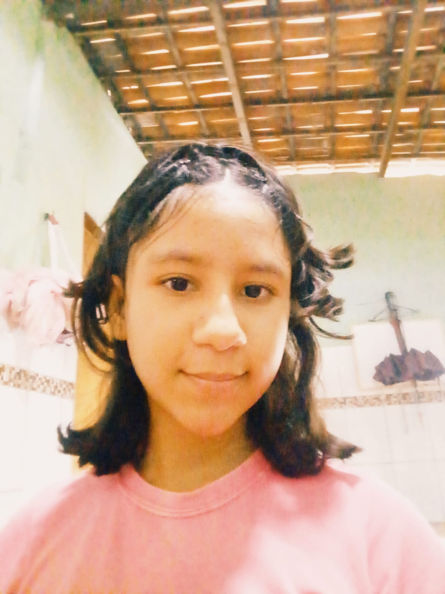
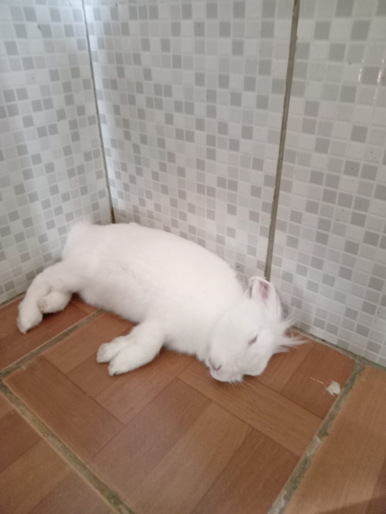
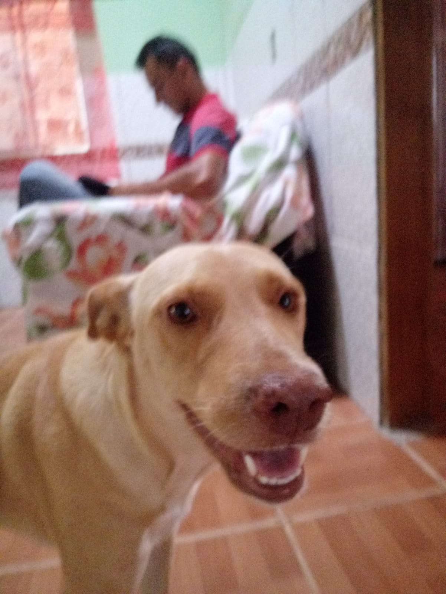
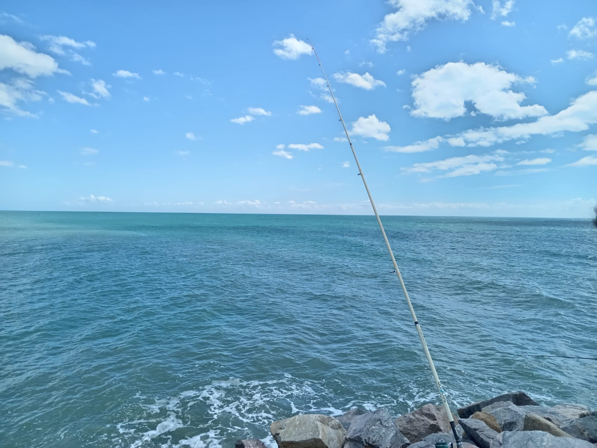
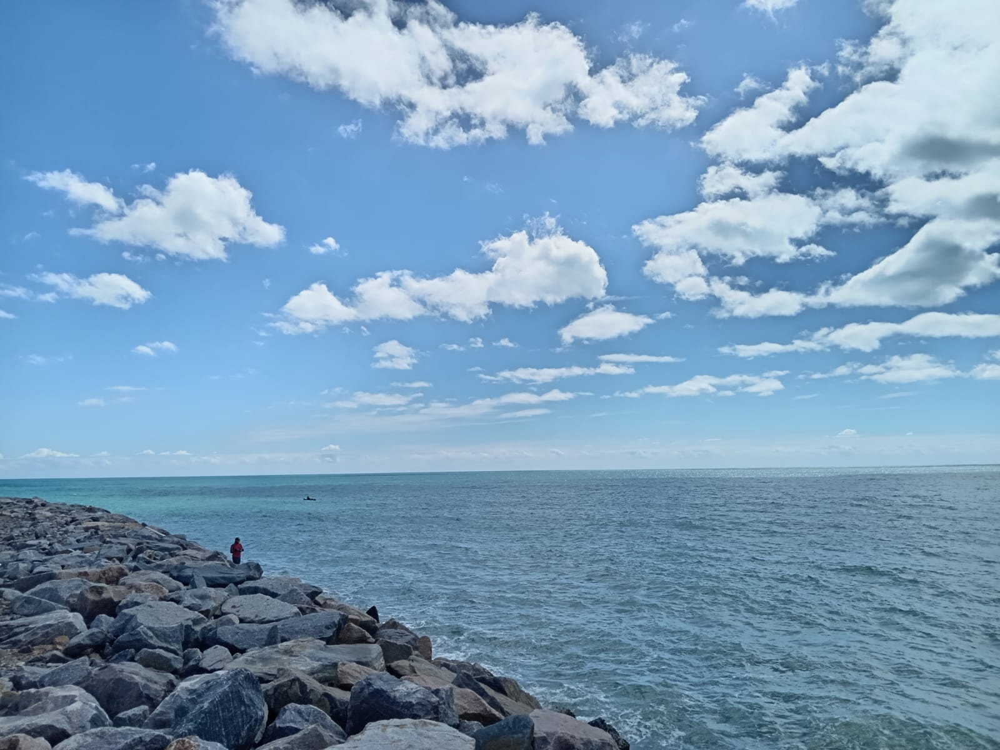
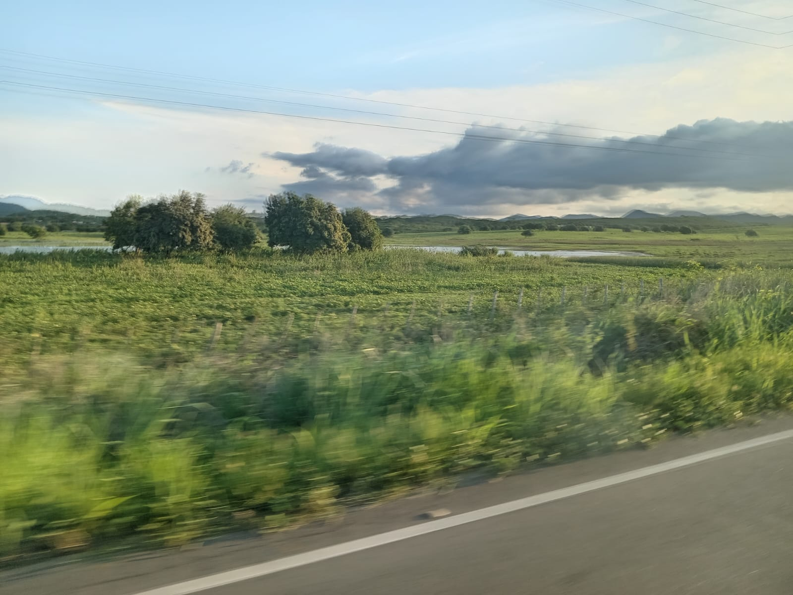
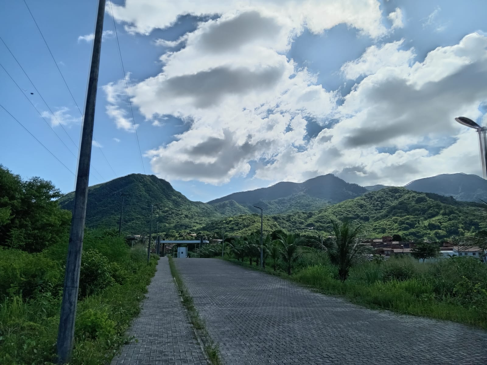
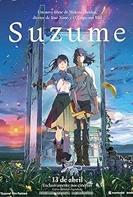
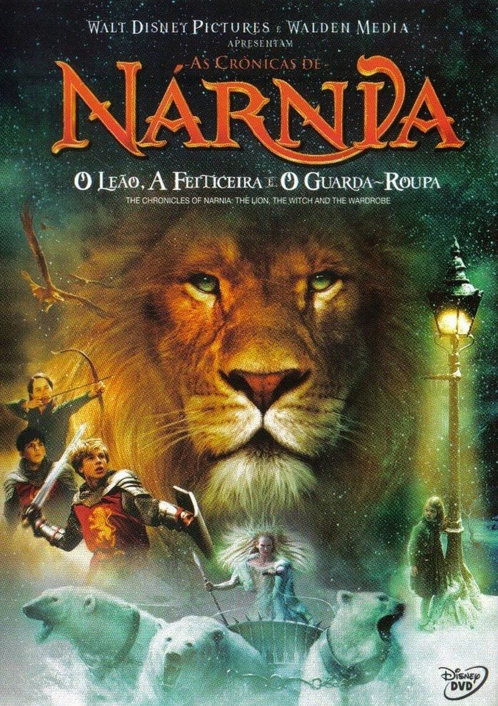
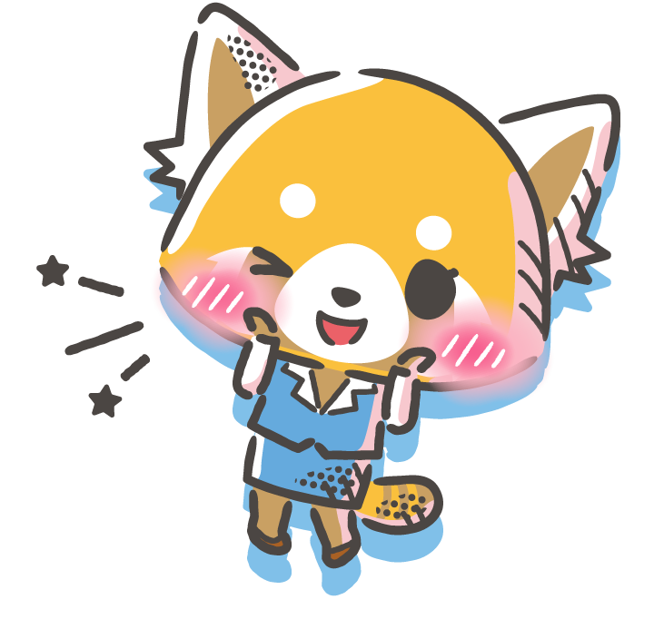

Rute Nunes do Nascimento
- Idade:16
- Cor:Parda
- Nacionalidade:Brasil
- Data de Nascimento:02/04/2009
- Nivel de Alfabetização:Cursando o ensino médio
- Estudante do Instituto Federal de Educação, Ciência e Tecnologia do Ceará (IFCE-MPE)
Sobre mim
Sou a Rute nasci em 2009 no dia 02 do mês de abril em fortaleza,morei em fortaleza até os 4 anos de idade e depois meus pais se mudaram pro distrito de Amanari em Maranguape. atualmente moro numa localidade na pedra d'água no Amanari, estudo no Instituto Federal de Educação, Ciência e Tecnologia do Ceará IFCE na cidade de Maranguape e curso o ensino médio e faço o curso de técnico em informática mas não desejo seguir nessa área pois não gosto de jeito nenhum sou muito ruim nesse curso e o que eu desejo é seguir em alguma área de humanas ou seguir alguma área relacionada com animais,natureza e paisagens em outras palavras viagens. Sou mãe de pets lindos e fofos ;)

Meus Gostos
Meus Pets
Eu amo meus bichinhos eles me animam sempre quando os vejos não viveria sem eles e gosto deles de mais






Fotografias Favoritas de pasisagens
Eu gosto muito de paisagens da natureza sempre tiro fotos quando consigo eu realmente gosto disso






Séries Animes Filmes Favoritos
Filmes
Um dos meus gostos favoritos e passa tempo



Séries


.jpg )
Animes


Projetos
Projeto POO:
Projeto POOProjeto Figma:
projeto FigmaProjetos Web:
Projeto webProjeto-Landing-Pages:
Projeto-Landing-PagesHabilidades
| Idioma | Conhecimento | Experiência |
|---|---|---|
| Português | Avançado | Diária |
| Inglês | Mediano | Pouca |
| Espanhol | Pouco | Nenhuma |
Contato
